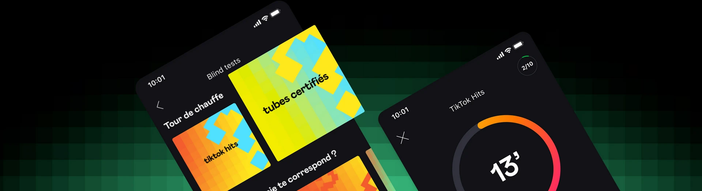

- Accès à plus de 90 millions de titres
- Accès à des milliers de podcasts
- Publicités
- Mixs aléatoires
- Accès à plus de 90 millions de titres
- Accès à des milliers de podcasts
- Écoute les titres de ton choix
- Sans aucune publicité
- Télécharge tes favoris pour les écouter hors connexion
- Accès à plus de 90 millions de titres
- Accès à des milliers de podcasts
- Profite de 6 comptes indépendants, chacun avec les avantages de Deezer Premium
- Son Haute Fidélité inclus
- Écoute simultanée sur plusieurs appareils
- Accès à plus de 90 millions de titres
- Accès à des milliers de podcasts
- Écoute les titres de ton choix
- Sans aucune publicité
- Télécharge tes favoris pour les écouter hors connexion
la fonction qui apprend à vous connaître, lit et vous recommande des morceaux à l'infini en fonction de vos préférences d'écoute
une extension de Flow qui vous permet de choisir une ambiance particulière et qui génère ensuite une liste de lecture infinie basée sur cette ambiance
est une application conçu par deezer vous aidant à identifier la musique que vous entendez autour de vous.
Lancez SongCatcher et celui-ci reconnaitra la musique que vous écoutez et vous donnera ses informations tel que le titre et le chanteur.
Vous pouvez même fredonner la chanson dont vous aimeriez avoir les informations ou bien la siffler et SongCatcher la reconnaitra
est une application conçu par Deezer proposant une sélection spéciale de playlists, de méditations guidées, de sons de la nature et de musique douce conçus pour favoriser la relaxation, la concentration et le sommeil
mets au défi vos connaissances en musique ! devinez le titre de la chanson aussi rapidement que possible en tapant la réponse dans un délai imparti. Le Blind Test de Deezer propose généralement une grande variété de genres musicaux et d'artistes. Vous pouvez ainsi tester vos connaissances sur un large éventail de morceaux de musique.
